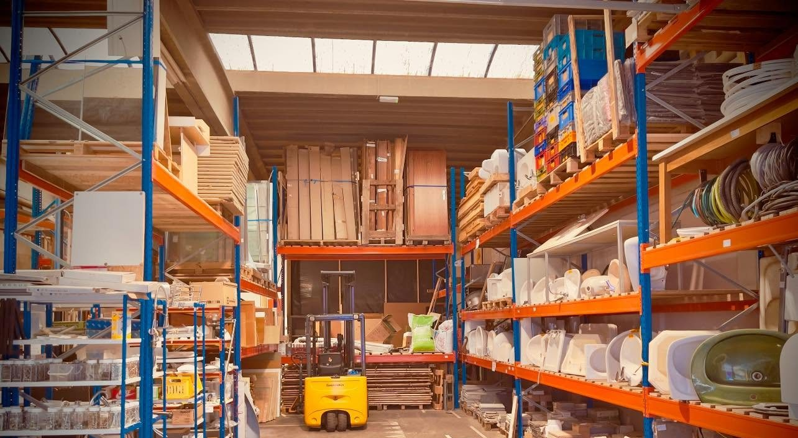
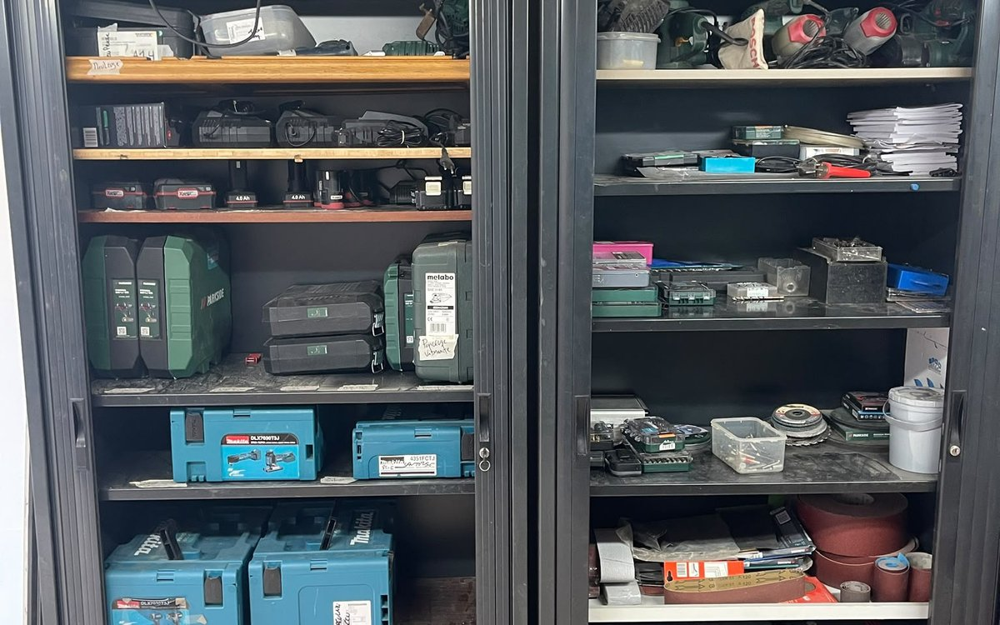
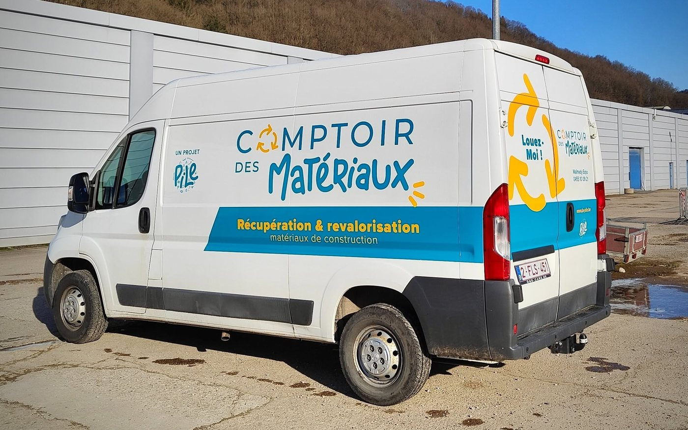
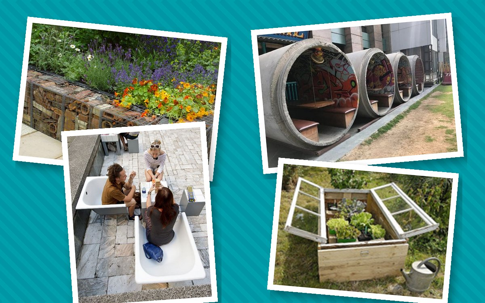

Matériaux de construction de réemploi, outils et camionnette à louer, atelier partagé : à Malmedy, on fait avec ce qui existe déjà.

🏷️Sanitaires, portes, châssis, carrelage, bois… de réemploi, à prix doux.

🔧Perceuses, scies, échelles… louées à la période, au tarif conscient.

🚐La camionnette 7j/7 et l’atelier partagé, à réserver en ligne.

🌱Des réalisations en réemploi, en photos.
Rue Frédéric Lang 3, 4960 Malmedy · Itinéraire
Légende à compléter (par où entrer, où se garer).
Magasin ouvert le mercredi et le samedi, de 9 h à 16 h. En dehors, sur rendez-vous.
Repérez l’article en ligne, notez sa référence, réservez par mail ou téléphone, payez au comptoir.
Vous avez des matériaux en bon état ? Proposez-les ici avant de les apporter.